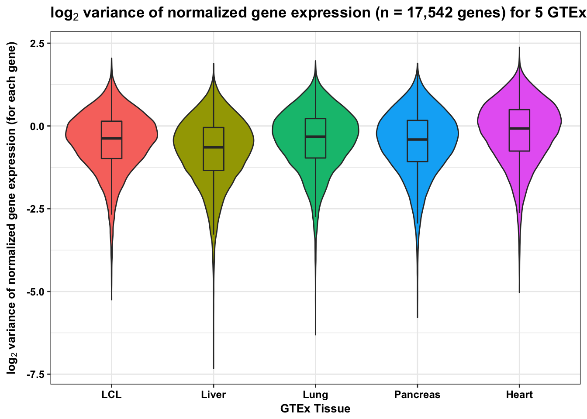

Here, we want to compare the variance of GTex LCLs to other GTex tissues. In GTex, since LCLs have 114 samples, we will pick the following tissues with similar sample sizes:
# Library
library(dplyr)## Warning: package 'dplyr' was built under R version 3.2.5##
## Attaching package: 'dplyr'## The following objects are masked from 'package:stats':
##
## filter, lag## The following objects are masked from 'package:base':
##
## intersect, setdiff, setequal, unionlibrary("ggplot2")## Warning: package 'ggplot2' was built under R version 3.2.5# Function
bjp<-
theme(
axis.text.y = element_text(size = 9,face = "bold",color = "black"),
axis.title.y = element_text(size = 10,face = "bold",color = "black"),
axis.text.x = element_text(size = 9,face = "bold",color = "black"),
axis.title.x = element_text(size = 10,face = "bold",color = "black"),
plot.title = element_text(size = 13, face = "bold"))
# Import file
Cells_EBV.transformed_lymphocytes_Analysis.v6p.normalized.expression.3 <- read.delim("~/Desktop/Cells_EBV-transformed_lymphocytes_Analysis.v6p.normalized.expression 3.R")
Heart_Left_Ventricle_Analysis.v6p.normalized.expression <- read.delim("~/Desktop/Heart_Left_Ventricle_Analysis.v6p.normalized.expression.R")
Pancreas_Analysis.v6p.normalized.expression <- read.delim("~/Desktop/Pancreas_Analysis.v6p.normalized.expression.R")
Liver_Analysis.v6p.normalized.expression <- read.delim("~/Desktop/Liver_Analysis.v6p.normalized.expression.R")
Lung_Analysis.v6p.normalized.expression <- read.delim("~/Desktop/Lung_Analysis.v6p.normalized.expression.R")
intersect(intersect(intersect(intersect(colnames(Cells_EBV.transformed_lymphocytes_Analysis.v6p.normalized.expression.3), colnames(Heart_Left_Ventricle_Analysis.v6p.normalized.expression)), colnames(Pancreas_Analysis.v6p.normalized.expression)), colnames(Liver_Analysis.v6p.normalized.expression)), colnames(Lung_Analysis.v6p.normalized.expression))## [1] "X.chr" "start" "end" "gene_id" "GTEX.WFON"
## [6] "GTEX.X3Y1" "GTEX.Y5V5" "GTEX.YEC4" "GTEX.ZPU1" "GTEX.ZTPG"# Select 5 desired tissues
indiv_col <- c("X.chr", "start", "end", "gene_id", "GTEX.WFON", "GTEX.X3Y1", "GTEX.Y5V5", "GTEX.YEC4", "GTEX.ZPU1", "GTEX.ZTPG")
LCL <- Cells_EBV.transformed_lymphocytes_Analysis.v6p.normalized.expression.3[,indiv_col]
dim(LCL)## [1] 21931 10heart <- Heart_Left_Ventricle_Analysis.v6p.normalized.expression[,indiv_col]
dim(heart)## [1] 22461 10liver <- Liver_Analysis.v6p.normalized.expression[,indiv_col]
dim(liver)## [1] 21848 10lung <- Lung_Analysis.v6p.normalized.expression[,indiv_col]
dim(lung)## [1] 27843 10pancreas <- Pancreas_Analysis.v6p.normalized.expression[,indiv_col]
dim(pancreas)## [1] 23175 10# Find the common genes between these 5 tissues
common_geneid <- intersect(intersect(intersect(intersect(LCL$gene_id, heart$gene_id), liver$gene_id), lung$gene_id), pancreas$gene_id)
length(common_geneid)## [1] 17542# Get the row names for the common genes
LCL_17542 <- which(LCL$gene_id %in% common_geneid)
LCL_17542_df <- LCL[LCL_17542,]
dim(LCL_17542_df)## [1] 17542 10heart_17542 <- which(heart$gene_id %in% common_geneid)
heart_17542_df <- heart[heart_17542,]
dim(heart_17542_df)## [1] 17542 10liver_17542 <- which(liver$gene_id %in% common_geneid)
liver_17542_df <- liver[liver_17542,]
dim(liver_17542_df)## [1] 17542 10lung_17542 <- which(lung$gene_id %in% common_geneid)
lung_17542_df <- lung[lung_17542,]
dim(lung_17542_df)## [1] 17542 10pancreas_17542 <- which(pancreas$gene_id %in% common_geneid)
pancreas_17542_df <- pancreas[pancreas_17542,]
dim(pancreas_17542_df)## [1] 17542 10# Take the variances of each gene in each data frame
LCL_var <- as.data.frame(apply(as.data.frame(LCL_17542_df[,5:10]),1, var) )
colnames(LCL_var) <- c("Variance")
liver_var <- as.data.frame(apply(as.data.frame(liver_17542_df[,5:10]),1, var) )
colnames(liver_var) <- c("Variance")
lung_var <- as.data.frame(apply(as.data.frame(lung_17542_df[,5:10]),1, var) )
colnames(lung_var) <- c("Variance")
pancreas_var <- as.data.frame(apply(as.data.frame(pancreas_17542_df[,5:10]),1, var) )
colnames(pancreas_var) <- c("Variance")
heart_var <- as.data.frame(apply(as.data.frame(heart_17542_df[,5:10]),1, var) )
colnames(heart_var) <- c("Variance")
# Take log2 variances
LCL_log_var <- log2(LCL_var)
liver_log_var <- log2(liver_var)
lung_log_var <- log2(lung_var)
pancreas_log_var <- log2(pancreas_var)
heart_log_var <- log2(heart_var)
median(LCL_log_var[,1])## [1] -0.6461825median(liver_log_var[,1])## [1] -0.3242026median(lung_log_var[,1])## [1] -0.4117142median(pancreas_log_var[,1])## [1] -0.07430495median(heart_log_var[,1])## [1] -0.3732486t.test(LCL_log_var, liver_log_var, alternative = c("greater"))##
## Welch Two Sample t-test
##
## data: LCL_log_var and liver_log_var
## t = -32.526, df = 34803, p-value = 1
## alternative hypothesis: true difference in means is greater than 0
## 95 percent confidence interval:
## -0.3473949 Inf
## sample estimates:
## mean of x mean of y
## -0.7582014 -0.4275290t.test(LCL_log_var, heart_log_var, alternative = c("greater"))##
## Welch Two Sample t-test
##
## data: LCL_log_var and heart_log_var
## t = -28.238, df = 34643, p-value = 1
## alternative hypothesis: true difference in means is greater than 0
## 95 percent confidence interval:
## -0.3006455 Inf
## sample estimates:
## mean of x mean of y
## -0.7582014 -0.4741048# Make labels
labels1 <- array("LCL", dim = c(17542, 1))
labels2 <- array("Liver", dim = c(17542, 1))
labels3 <- array("Lung", dim = c(17542, 1))
labels4 <- array("Pancreas", dim = c(17542, 1))
labels5 <- array("Heart", dim = c(17542, 1))
# Combine labels
labels9 <- rbind(labels1, labels2, labels3, labels4, labels5)
labels <- as.numeric(as.factor(labels9))
# Combine variances
gtex_log_var <- rbind(as.data.frame(LCL_log_var), as.data.frame(liver_log_var), as.data.frame(lung_log_var), as.data.frame(pancreas_log_var), as.data.frame(heart_log_var))
# Make df for boxplot
gtex_var_labels <- cbind(gtex_log_var, labels)
p <- ggplot(gtex_var_labels, aes(x = factor(labels), y = gtex_log_var))
p <- p + geom_violin(aes(fill = factor(labels)), show.legend = FALSE) + geom_boxplot(aes(fill = factor(labels)), show.legend = FALSE, outlier.shape = NA,width=0.2) + theme_bw() + xlab("GTEx Tissue") + ylab(expression(bold('log'[2]*' variance of normalized gene expression (for each gene)'))) + ggtitle(expression(bold('log'[2]*' variance of normalized gene expression (n = 17,542 genes) for 5 GTEx tissues')))
p <- p + scale_x_discrete(labels=c("1" = "LCL", "2" = "Liver", "3" = "Lung", "4" = "Pancreas", "5" = "Heart")) + bjp
p## Don't know how to automatically pick scale for object of type data.frame. Defaulting to continuous.
# Get the row names for the common genes
LCL_17542 <- which(LCL$gene_id %in% common_geneid)
LCL_17542_df <- LCL[LCL_17542,]
dim(LCL_17542_df)## [1] 17542 10hist(LCL_17542_df[,5])hist(LCL_17542_df[,6])